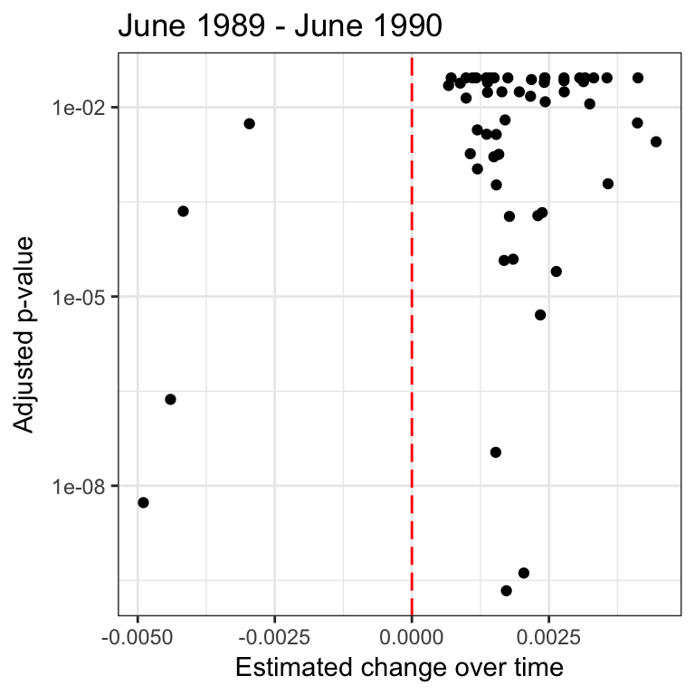
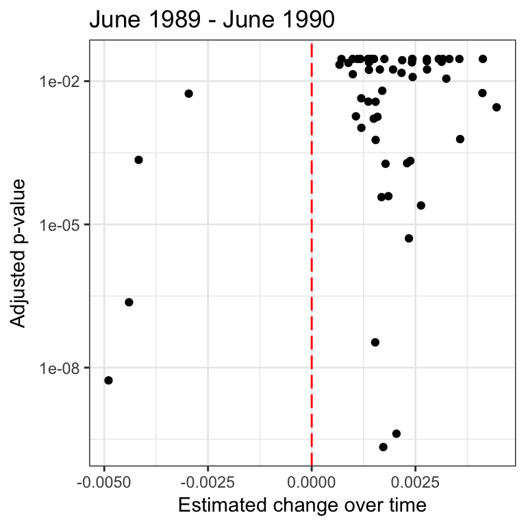

Exploratory Analysis
This page contains a preliminary analysis of official discourse change. Here we trace change of frequency of appearance in the People’s Daily during the months after intensive military repressionss for both movements.
Interactive Table
First, we provide an interactive table to present counts of terms in the front page of People’s Daily on each day from May 4, 1989 to July 3, 1989. This table may help get some sense of the terms that appear in the People’s Daily at that period of time. Sort dates, terms, and word counts using the arrow next to each column name.
Binomial Statistical Analysis of Word Frequency Change
Afterwards, we conduct binomial statistical analysis to trace changes of frequency of key terms during the month immediately after the military repression for both movements. In both graphs as follows, dots represent terms, x-axis represents the change of appearance probability of given terms over one month. Positive numbers mark increases in frequency. Y-axis marks the p-value of frequency change. To be clear, we only present 50 terms whose extents of frequency change are the most among all words, and changes for all these selected terms are significant at the .05 level.
 

These graphs present interesting findings. During the month after the military repression of the 1986 Student Demonstration, most of these significant terms experience an increase in frequency. However, for the case of Tiananmen Square Protest in 1989, the opposite trend is observed. Most of the key terms experience a decrease in word frequency. This suggests that there are denser discourses immediately following the 1989 movement, while the opposite is the case for the 1986 Student Demonstration.
In the following two tables, we provide tables to show those terms that change most abruptly during the month after the repression for both events. First we present the result table for the 1986 Student Demonstration, with the English translation of the key terms:
| Chinese word | Engish translation | predicted frequency | standard error | p-value |
|---|---|---|---|---|
| 十三大 | XIII | 0.01360 | 0.00283 | 0.00000 |
| 安定团结 | Stability and unity | -0.00768 | 0.00167 | 0.00000 |
| 平均 | Average | -0.00732 | 0.00138 | 0.00000 |
| 资产阶级自由化 | Bourgeois liberalization | -0.00624 | 0.00150 | 0.00003 |
| 反映 | Reflect | -0.00498 | 0.00150 | 0.00091 |
| 获得 | Get | -0.00476 | 0.00132 | 0.00031 |
Then we present the table for the Tiananmen Square Protest in 1989:
| Chinese word | Engish translation | predicted frequency | standard error | p-value |
|---|---|---|---|---|
| 暴乱 | Riots | -0.00490 | 0.00076 | 0.00000 |
| 友谊 | Friendship | 0.00446 | 0.00112 | 0.00007 |
| 反革命 | The counter-revolution | -0.00440 | 0.00075 | 0.00000 |
| 平息 | Calm | -0.00417 | 0.00091 | 0.00000 |
| 一行 | Line | 0.00412 | 0.00135 | 0.00225 |
| 友好关系 | Friendly relations | 0.00411 | 0.00109 | 0.00017 |
Tentative Visualization of Selected Key Words
What are the relationships between characteristics of key words and their changes of frequency? To preliminary examine such relationships, we tentatively select four word pairs and plot their frequency change during the months after the repression of two movement events:


The graphs shows fascinating results. The word pairs we choose are pairs of a more ideological term and a rather ideology-free term. For instance, “bourgeois liberalism” has relative high ideological level and was used by the Chinese government to attack those individuals whose behaviors and discourses deviate from principles of socialism. In comparision, “stability and unity” contains little ideological representation. Similarly, from the authoritarian state’s perspective “riot” usually carries negative emotional meanings, while “unrest” is rather neutral emotionally and ideologically. In all four graphs, words with strong ideological meanings are plotted in red lines, while those with rather weaker ideological meanings are plotted in green lines. It could be found that those representations of strong ideology maintain their frequency of appearance even one year after the movement repression, while those of weaker ideology deterioriate soon after the repression.
These visualized findings seem to indicate that Chinese authoritarian government use discourses with strong ideology much less after the 1989 Movement compared to after the 1986 Student Demonstration. The next tab in this website further explores this topic through deeper graphic analysis.